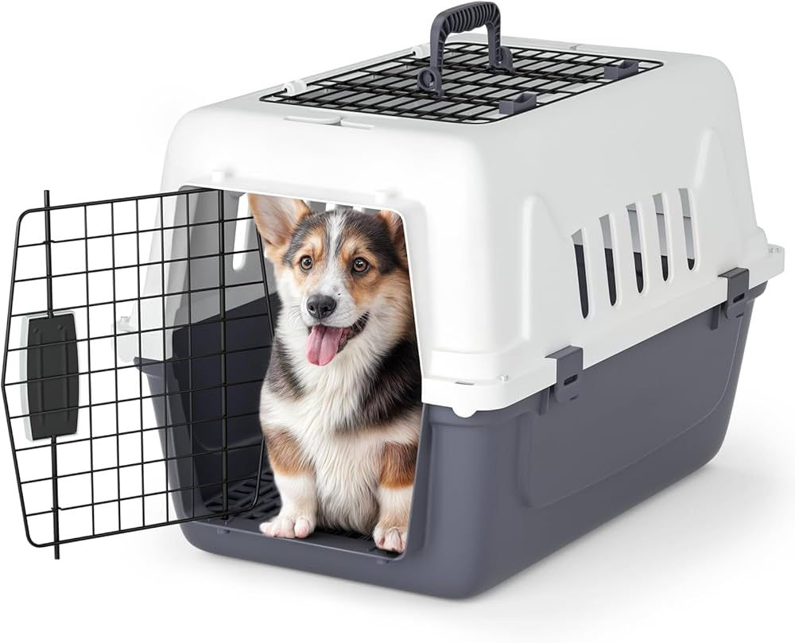
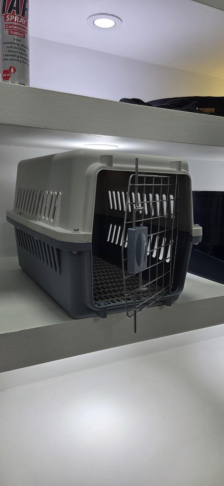
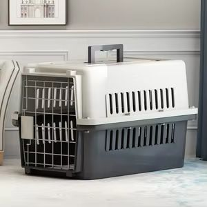

Acessórios para petsCaixa transportadora
Caixa transportadora
para pets
Uma caixa transportadora rígida para levar o seu animal de estimação nas deslocações do dia a dia. Consulte a Win Win Pet Shop para confirmar tamanhos e disponibilidade.
- Porta frontal em metal
- Aberturas laterais
- Pega superior
Veja de perto
Uma solução prática para deslocações.
As fotos mostram o modelo disponível na loja. Confirme sempre o tamanho adequado ao seu pet antes de comprar.


Detalhes visíveis
Características para uma escolha informada.
Estas informações foram confirmadas directamente pelas imagens do produto. Peça à equipa os detalhes do modelo em stock.
O tamanho certo importa.
O seu pet deve conseguir ficar de pé, virar-se e deitar-se com conforto. Diga-nos as medidas aproximadas e o porte do animal para orientarmos a procura.
Planeie a deslocação.
Verifique o fecho, a ventilação e a compatibilidade da transportadora com a forma de transporte que pretende usar antes de sair.
Comprar na Win Win
Confirme o modelo antes de visitar.
Conte-nos sobre o seu pet
Indique espécie, porte e medidas aproximadas para ajudar a encontrar uma opção adequada.
Confirme disponibilidade
A equipa verifica o stock e esclarece quaisquer detalhes do modelo disponível.
Visite a loja
Passe pela Win Win Pet Shop em Maputo para ver a transportadora antes da compra.